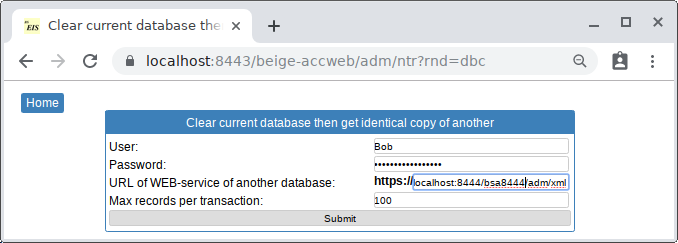
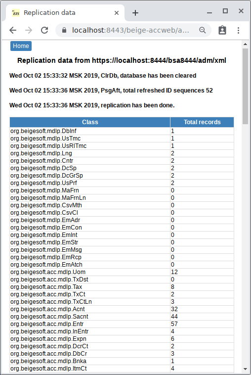
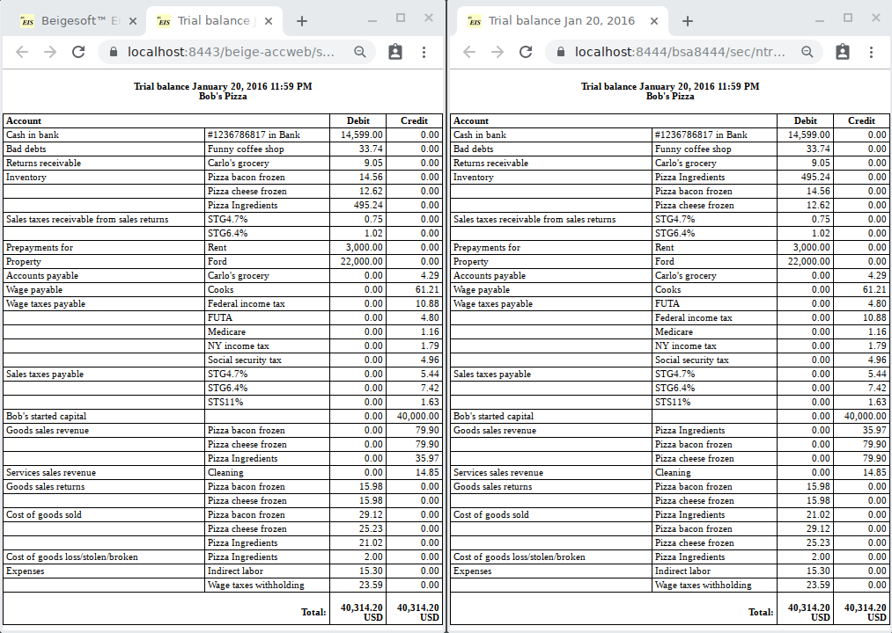
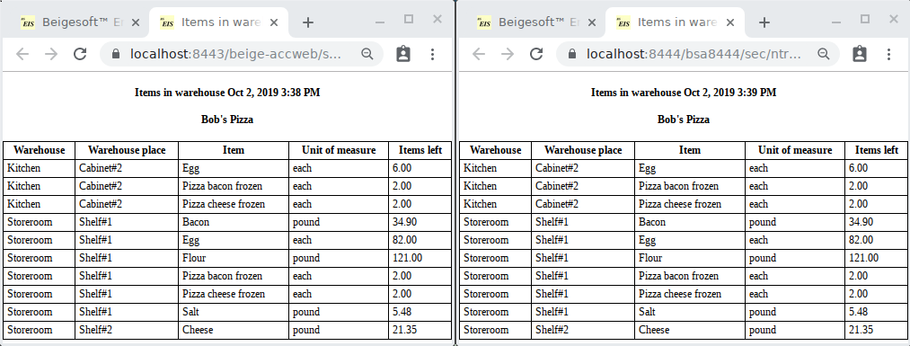

Import of an EIS database by using the WEB-service.
Keywords: Import of a database by using a WEB-service.
* You can not use the A-Jetty SSL (HTTPS) certificate for any Internet resource (site or WEB-service)! You can use it on Tomcat only for testing purposes with disabled Internet connection!
If you decided to move from lite standalone (single user) SQlite version of Beigesoft™ EIS into a high performance enterprise-ready database MySql or Postgresql, then use the WEB-service in the Menu->...->Import database
Bob decided to check it out. He installed the Apache Tomcat and the Postgresql according to https://github.com/demidenko05/beige-accweb README.txt. He download the file beige-accweb.war from the central Maven repository https://search.maven.org/#search%7Cga%7C1%7Cg%3A%22org.beigesoft%22 and put it into the webapps folder of the Apache Tomcat. Bob installed the Bouncy Castle crypto-provider in static way (see Software installation...), then he copied ajettykeystore.444 file into [tomcat-home]/conf folder and uncommented and changed SSL connector in the [tomcat-home]/conf/server.xml:
<Connector port="8443" protocol="org.apache.coyote.http11.Http11Protocol"
maxThreads="150" SSLEnabled="true" scheme="https" secure="true"
keyAlias="AJettyHttps444"
keystoreFile="conf/ajettykeystore.444"
keystorePass="**************"
keystoreType="PKCS12"
keystoreProvider="BC"
clientAuth="false" sslProtocol="TLS" />
Bob checks out that he can not read the server.xml file under his regular account, because this file holds the keystore password.
Bob added the ajetty-ca.pem into the Java's trusted CA keystore:
keytool -import -trustcacerts -alias ajettyca -file "ajetty-ca.pem" -keystore /usr/lib/jvm/java-8-openjdk-amd64/jre/lib/security/cacerts
* on Java11 run:
keytool -importcert -trustcacerts -alias ajettyca -file "ajetty-ca[###].pem" -cacerts
* on MS Windows open the PowerShell as ADMIN in the Beigesoft EIS folder and run:
& "C:\Program Files (x86)\Java\jre[version#8]\bin\keytool.exe" -import -trustcacerts -alias ajettyca -file "ajetty-ca.pem" -keystore "C:\Program Files (x86)\Java\jre[version#8]\lib\security\cacerts"
The default password to this keystore is changeit. Adding a CA certificate to this keystore requires ROOT permission,
so do not worry about the keystore password. Never use this keystore to store private keys!
For Java11 you should add Bouncy Castle jars in the system classpath Tomcat by hand. To do it, create setenv.sh in bin folder (see catalina.sh):
#!/bin/bash
export CLASSPATH=/home/[you]/.m2/repository/org/bouncycastle/bcprov-jdk15on/1.67/bcprov-jdk15on-1.67.jar:/home/[you]/.m2/repository/org/bouncycastle/bcpkix-jdk15on/1.67/bcpkix-jdk15on-1.67.jar
He launched the SQlite version Beigesoft™ EIS on 8444 port (source local database). Then he started Tomcat and opened the address https://localhost:8443/beige-accweb/ He pushed the Menu -> ... -> Import database, then entered "URL of WEB-service of source database:" as "localhost:8444/bsa8444/adm/xml" and filled user/password fields then pressed "submit":

The import report is:

The data is the same:


Local WEB-server A-Jetty https://127.0.0.1:8444/bsa8444 is not available for cloud (Internet). Apache Tomcat uses an Internet-available IP address, so your data will be Internet-accessible, and you can import data from your Tomcat (on your computer) into a Beigesoft™ EIS deployed on any other cloud JEE server. But you can not use the A-Jetty HTTPS certificate for it! You must make a new HTTPS certificate by yourself. You can do it (for example) by using the Bouncy Castle Crypto Java API or the OpenSSL.